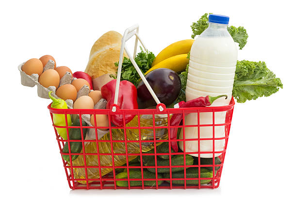

🛒 Market Basket Analysis (Apriori Algorithm)
This project performs market basket analysis on a retail transactions dataset using the Apriori algorithm. The goal is to uncover patterns and associations between items that are frequently bought together.
View Project

🏠 Boston Housing Prices (predictive model-Linear Regression)
This Project aims to analyze and predict housing prices in the Boston area using machine learning techniques. The dataset includes various factors such as crime rates, property tax rates, and the number of rooms per dwelling, which influence housing prices. By leveraging data analysis and predictive modeling, this project provides insights into the key drivers of real estate prices.
View Project
🚨 Gender-Based Violence in Kenya (Python (Pandas, NumPy, Matplotlib, Seaborn, SciPy))
This project explores survey data to uncover trends in justification for gender violence and its relation to demographic factors, focusing on: - The most common reasons why women experience gender-based violence - Differences in attitudes toward gender violence between men and women - The most common forms of violence - The impact of demographics such as age, education, and residence on attitudes toward gender violence
View Project
📦 Supply Chain Dashboard (powerbi)
This Power BI dashboard analyzes key supply chain metrics such as inventory turnover, order cycle time, and supplier performance. It helps identify bottlenecks and improve operational efficiency through interactive visuals and KPI tracking.
View Project